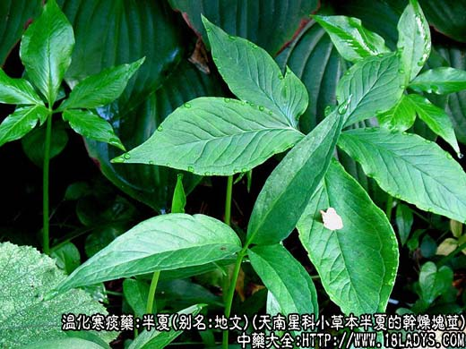
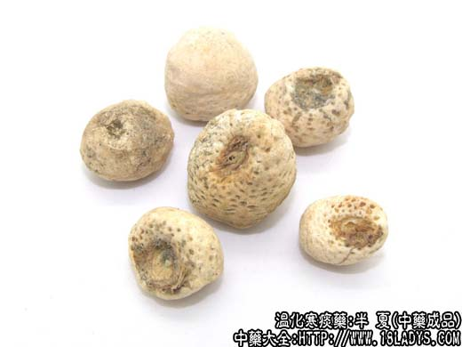
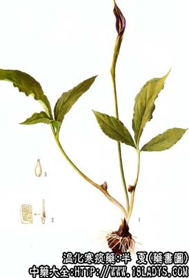

半夏为常用中药，《神农本草经》列为下品。
别名：地文，地星，水玉，守田，示姑，羊眼半夏，和姑。
来源：为天南星科多年生小草本植物，半夏搓去外皮的干燥块茎。栽培或野生。
产地：主产于四川、湖北、安徽、山东、河南、江苏、浙江、湖南，此外广西、云南、贵州等地也有生产。
性状鉴别：块茎呈不规则的圆球形、半圆球形。直径约0.8～1.5厘米，高约0.5～1厘米。表面乳白色或淡黄白色，未去净外皮的具黄棕色斑点。上端圆平，中心有凹陷的茎痕，呈黄棕色，其周围密布棕色小凹点，下面钝圆，光滑或有多数小凸起。质坚实，断面白色，粉质，细腻。气微，有呛鼻感，味辛辣、麻舌刺喉（生半夏有毒不宜尝试）。
以个粒大，外色白净，质坚实，粉性者为佳。
主要成分：含B-谷甾醇及其葡萄糖甙固甾醇、微量挥发油、植物甾醇、皂甙、辛辣性物质、生物硷等。
功效与作用：和胃止呕、燥湿祛痰、散结消肿。其原理已知者为：
1、镇吐。制半夏丸剂、半夏煎剂对试验动物有镇吐作用。生半夏流浸膏、生半夏粉剂（经高温处理）也有镇吐作用。
2、催吐。生半夏及其未经高温处理的流浸膏有催吐作用，这与前人所有说的“半夏生令人吐”相符。但生半夏粉剂经济高温处理后则可除去催吐成分，而保留镇吐作用。
3、镇静。有效成分为一种生物硷。其水溶性煮沸滤过液对呼吸运动有轻度镇静作用。
4、降眼压。半夏水溶性煮沸过液内服后，能使眼压轻度下降。
此外，临床观察认为还有化痰止咳作用。
性味：辛温，有毒。
归经：入脾、胃经。
功能：燥湿化痰，降逆止呕。
主治：湿痰阴塞，痰饮咳嗽，胸部胀满，呕吐恶心，痰饮眩悸，妊娠呕吐。
临床应用：为治疗呕吐、痰饮的常用药。
1、用于止呕，取其有镇吐作用。如治由湿邪引起的呕吐，半夏的疗效更好，前人的经验亦认为“胃冷呕秽，以半夏为量佳”。临床多用于治疗以下各种呕吐：
急性消化不良引起的呕吐，往往兼有心下痞满（胃部胀闷）常配茯苓、生姜、加强健胃止呕作用，方如小半夏加茯苓汤。
慢性胃炎引起的呕吐，往往兼有胃痛、嗳气、食欲不振，常配陈皮、木香、砂仁、益气汤等，方如香砂六君汤（方见砂仁项下）。
神经性呕吐，兼有神经官能症状者，常配旋复花、代赭石、生姜、竹茹等。
妊娠呕吐，常配生姜、川连、党参等，方如生姜泻心肠（方见生姜项下）。用健胃和胃汤也好。
2、用于祛痰，主要用于湿痰，表现为咳嗽痰多、痰白粘稠，胸脘作闷（可见于慢性气管炎、支气管扩张），常配陈皮、茯苓等（二陈汤，方见陈皮项下），以此为基础，再随证酌加款冬、前胡、川贝等。
如为痰厥头痛，表现为咳嗽痰多，时吐清涎、头痛、畏寒，或有眩晕，常以半夏配天麻、白术、陈皮等补脾燥湿，化痰祛风，方如半夏白术天麻汤。前人的经验认为“足太阴痰厥头痛，非半夏不能疗”，在这方面半夏所起的作用可能为祛痰、镇静。
附：对于急性青光眼的头痛、眼痛、恶心，有人建议可用半夏作对症治疗，因实验发现半夏有降眼压作用。
3、外用以生半夏捣烂敷疮疡肿毒，对神经末梢似有麻痹作用，能止痛。又治癣可用生半夏与醋磨汁外用。
使用注意：1、半夏性较辛燥，副作用有咽干、舌麻等。生半夏性更辛烈，刺激咽喉，并易致中毒，发生舌肿、失音声嘶，故半夏一般宜充分制透后入药。实验证明，以白矾、生姜炮炙半夏，白矾可解除半夏引致实验动物失音的作用，生姜可协助半夏止吐。虽然，有人认为半夏制后药力有所削减，不如应用生半夏好，并谓只要将生半夏打碎，以生姜汁泮渍10分钟左右，便可缓解其副作用，但在临床实践中，用于内服时，一般仍主张生半夏不宜用或尽量少用。如治寒痰喘逆而需要生半夏时，应多加生姜，一则以制其毒，二则以助去痰饮，降喘逆。
2、姜半夏（法夏）燥湿祛痰止呕之力较好，故治脾湿而痰涎涌盛作呕之寒痰多用姜半夏；清半夏辛燥之性大减，宜于体弱痰多，而寒湿较轻轻者用。另有一种半夏曲，由清半夏和面发酵而成，辛平微甘，能温胃化滞开郁，脾胃虚弱而腹胀作呕者适用。
3、与川贝比较，两者都能化痰，但半夏辛温，长于治湿痰，川贝苦凉，长于清热痰；又半夏（配茯苓）化胃中之痰较好，川贝（配陈皮）化肺中之痰较好。在一般情况下，川贝与半夏合用，化痰之力更全面而加强。
4、凡阴虚、有热、血证、肺燥而咳嗽不爽者，不宜用半夏；咳痰和呕逆不因寒湿而起者，不宜用半夏。孕妇慎用半夏，但如属对症，也可应用，不过以用法夏为宜，又可用紫菀、蒌壳代半夏。
5、服半夏而有毒性反应时，可服蜜饯姜片，或饮用糖姜汤缓解。
6、半夏习惯上忌乌头配伍，但现代的一些实验证明，半夏和乌头混合给药后，实验动物无严重反应。
用量：9～12g。
处方举例：小半夏加茯苓汤（《金匮要略》）：制半夏9g，茯苓9g，生姜15g，水煎，分两次温服。
半夏白术天麻汤（《李东垣》）：制半夏9g，天麻9g，白术9g，麦芽9g，陈皮6g，神曲9g，苍术6g，党参9g，黄芪9g，茯苓9g，泽泻6g，黄柏（或黄芩）4.5g，干姜3g，水煎服。
炮制加工：分为清半夏，姜半夏，法半夏，半夏曲四种。
1、清半夏。将择净杂质的半夏，大小分开，放于容器中，用清水浸炮，每日换水两次，浸泡三天，取出，用矾腌，一层半夏，一层白矾，层层铺匀，加清水淹泡三天后撤去白矾水，换清水浸泡一天取出，置沸水中煮2～3小时，至半夏切开内无生心，口尝稍有麻辣感，捞出，晾干，轧成颗粒状即成。（每半夏50kg用白矾面6.25kg）。
2、姜半夏：制法同清半夏。只是在煮时每50kg加入鲜姜12.5kg。
3、法半夏：取净半夏倒入缸内，放入清水浸泡三天，每日换水两次。取白矾面与泡好半夏层层铺匀加水，淹至7天，撤掉矾水，换清水泡2天。取白灰块用水发开，筛去粗渣。取泡好半夏与白灰粉层层铺匀，放入清水泡5天。去掉灰水换清水泡2天。取鲜姜、甘草同入锅内入放清水，加热熬煮4小时后，将浓液取出另放，再放入清水熬煮3小时，取出残渣压榨，榨出液与2次煮液合并，同泡好的半夏倒入缸中淹至5天，捞出呈鲜黄色，晾干即为法半夏。（每半夏50kg用白矾5kg、石灰15kg，甘草7.5kg，鲜姜5kg）。
4、半夏曲。姜半夏面25kg、白面50kg。将赤小豆2.5kg、杏仁2.5kg、青蒿0.75kg、苍耳草0.75kg、红蓼子0.75kg、共捣碎熬粥，合姜半夏、白面，发酵后做成小块即成。
注1：1、清、姜、法半夏三种制法不同。制是为了解去毒性。按照半夏总的效能，都是燥湿化痰和胃止呕吐、治咳嗽痰稀、寒湿疼痛，但是制半夏各有主症，清半夏偏风痰，姜半夏偏寒痰；法半夏偏湿痰。
2、反乌头。
注2：水半夏，为天南星科犁头尖属植物水半夏的干燥块茎。效用与半夏近似但止呕作用不强。